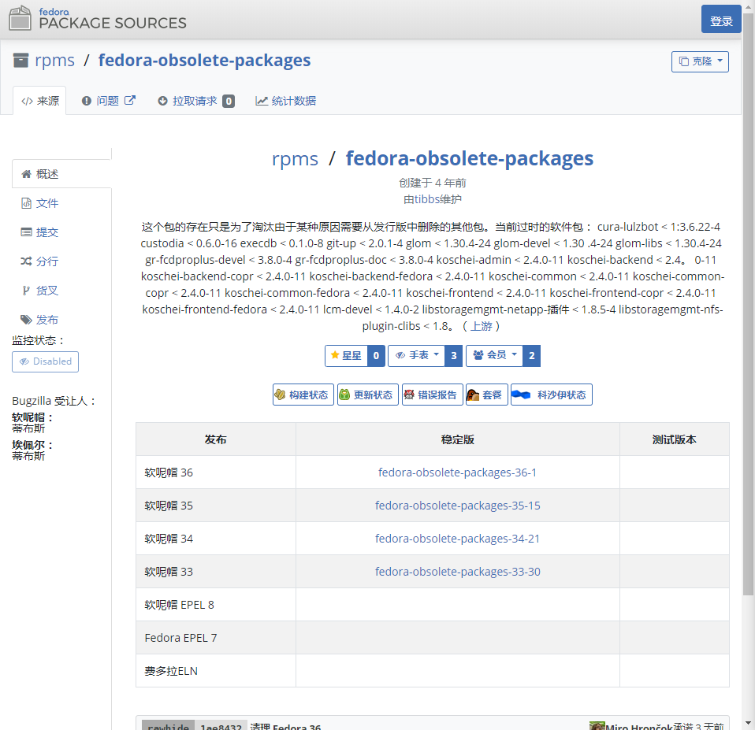
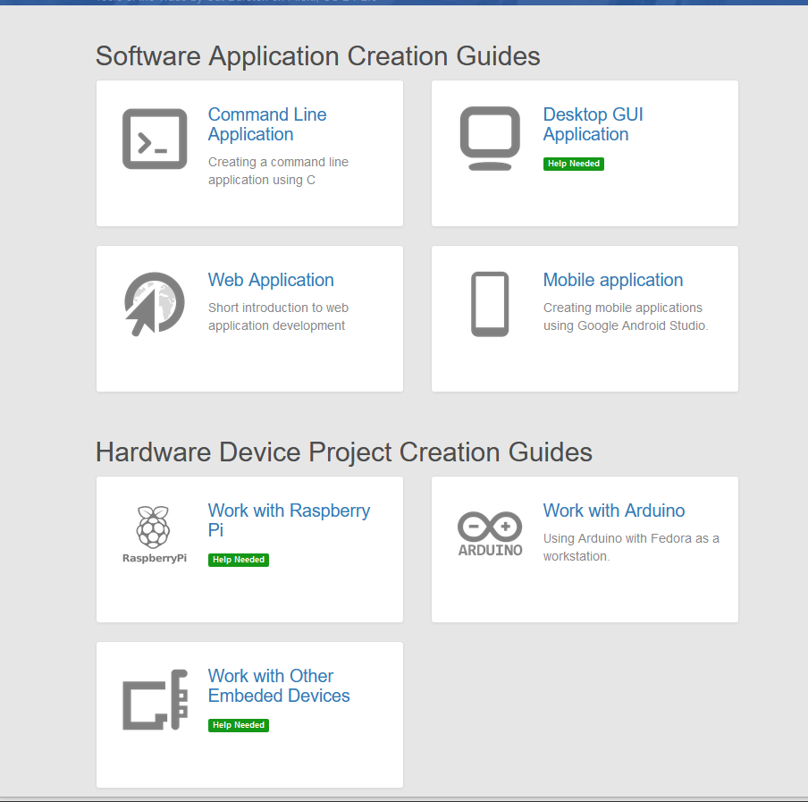
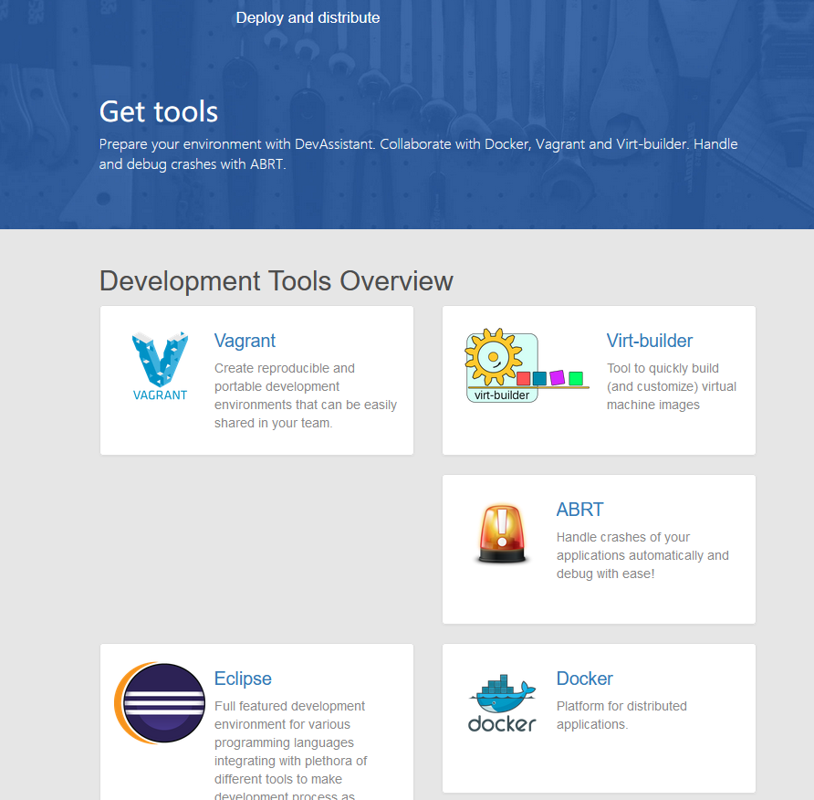
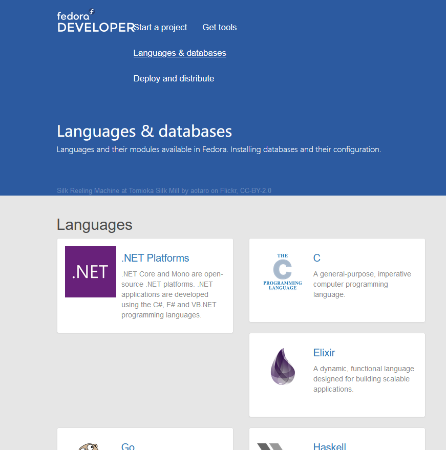
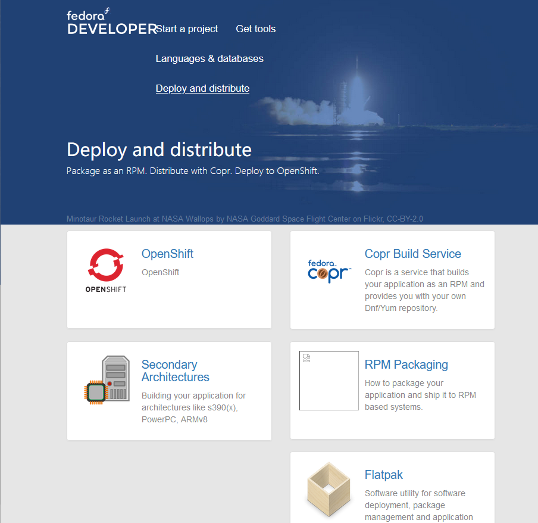

Section Item 2.1
Vivamus efficitur fringilla ullamcorper. Cras condimentum condimentum mauris, vitae facilisis leo. Aliquam sagittis purus nisi, at commodo augue convallis id. Sed interdum turpis quis felis bibendum imperdiet. Mauris pellentesque urna eu leo gravida iaculis. In fringilla odio in felis ultricies porttitor. Donec at purus libero. Vestibulum libero orci, commodo nec arcu sit amet, commodo sollicitudin est. Vestibulum ultricies malesuada tempor.
Section Item 2.2
Vivamus efficitur fringilla ullamcorper. Cras condimentum condimentum mauris, vitae facilisis leo. Aliquam sagittis purus nisi, at commodo augue convallis id. Sed interdum turpis quis felis bibendum imperdiet. Mauris pellentesque urna eu leo gravida iaculis. In fringilla odio in felis ultricies porttitor. Donec at purus libero. Vestibulum libero orci, commodo nec arcu sit amet, commodo sollicitudin est. Vestibulum ultricies malesuada tempor.
Section Item 2.3
Vivamus efficitur fringilla ullamcorper. Cras condimentum condimentum mauris, vitae facilisis leo. Aliquam sagittis purus nisi, at commodo augue convallis id. Sed interdum turpis quis felis bibendum imperdiet. Mauris pellentesque urna eu leo gravida iaculis. In fringilla odio in felis ultricies porttitor. Donec at purus libero. Vestibulum libero orci, commodo nec arcu sit amet, commodo sollicitudin est. Vestibulum ultricies malesuada tempor.
Section Item 3.1
Vivamus efficitur fringilla ullamcorper. Cras condimentum condimentum mauris, vitae facilisis leo. Aliquam sagittis purus nisi, at commodo augue convallis id. Sed interdum turpis quis felis bibendum imperdiet. Mauris pellentesque urna eu leo gravida iaculis. In fringilla odio in felis ultricies porttitor. Donec at purus libero. Vestibulum libero orci, commodo nec arcu sit amet, commodo sollicitudin est. Vestibulum ultricies malesuada tempor.
Section Item 3.2
Vivamus efficitur fringilla ullamcorper. Cras condimentum condimentum mauris, vitae facilisis leo. Aliquam sagittis purus nisi, at commodo augue convallis id. Sed interdum turpis quis felis bibendum imperdiet. Mauris pellentesque urna eu leo gravida iaculis. In fringilla odio in felis ultricies porttitor. Donec at purus libero. Vestibulum libero orci, commodo nec arcu sit amet, commodo sollicitudin est. Vestibulum ultricies malesuada tempor.
Section Item 3.3
Vivamus efficitur fringilla ullamcorper. Cras condimentum condimentum mauris, vitae facilisis leo. Aliquam sagittis purus nisi, at commodo augue convallis id. Sed interdum turpis quis felis bibendum imperdiet. Mauris pellentesque urna eu leo gravida iaculis. In fringilla odio in felis ultricies porttitor. Donec at purus libero. Vestibulum libero orci, commodo nec arcu sit amet, commodo sollicitudin est. Vestibulum ultricies malesuada tempor.
Section Item 4.1
Vivamus efficitur fringilla ullamcorper. Cras condimentum condimentum mauris, vitae facilisis leo. Aliquam sagittis purus nisi, at commodo augue convallis id. Sed interdum turpis quis felis bibendum imperdiet. Mauris pellentesque urna eu leo gravida iaculis. In fringilla odio in felis ultricies porttitor. Donec at purus libero. Vestibulum libero orci, commodo nec arcu sit amet, commodo sollicitudin est. Vestibulum ultricies malesuada tempor.
Section Item 4.2
Vivamus efficitur fringilla ullamcorper. Cras condimentum condimentum mauris, vitae facilisis leo. Aliquam sagittis purus nisi, at commodo augue convallis id. Sed interdum turpis quis felis bibendum imperdiet. Mauris pellentesque urna eu leo gravida iaculis. In fringilla odio in felis ultricies porttitor. Donec at purus libero. Vestibulum libero orci, commodo nec arcu sit amet, commodo sollicitudin est. Vestibulum ultricies malesuada tempor.
Section Item 4.3
Vivamus efficitur fringilla ullamcorper. Cras condimentum condimentum mauris, vitae facilisis leo. Aliquam sagittis purus nisi, at commodo augue convallis id. Sed interdum turpis quis felis bibendum imperdiet. Mauris pellentesque urna eu leo gravida iaculis. In fringilla odio in felis ultricies porttitor. Donec at purus libero. Vestibulum libero orci, commodo nec arcu sit amet, commodo sollicitudin est. Vestibulum ultricies malesuada tempor.
Core system issues
Package fedora-obsolete-packages is no longer installable, and is removed when upgrading to Fedora 32
The behaviour of the special package called Package-x-generic-16.pngfedora-obsolete-packages has been tweaked in Fedora 32 so that it can no longer be installed. If you currently have it installed, on upgrade to Fedora 32, it will be removed: the packaging system will show it being removed as a "dependent package", which is not really accurate but a limitation of how package removals are calculated. The removal is normal and expected and nothing to worry about.This is the package link:fedora-obsolete-packages
The package's only purpose is to obsolete packages that were retired and which would otherwise cause dependency resolution problems on upgrades. The package accomplishes this purpose simply by being available in the repositories; it never needs to actually be installed. Any attempt to install this package will end with "Nothing to do" message, but don't worry: this is not an error.
Workstation (GNOME) issues
Changing default keyboard layout gets reflected during disk decryption only after next kernel update
If you change your default keyboard layout in GNOME Settings, it will be changed immediately in your system, but it will not be changed immediately in the disk decryption dialog that is shown during boot (if you use disk encryption). The old keyboard layout will still be used for that disk decryption dialog until a new kernel is installed, only then it will be switched to the newly selected keyboard layout.
Other software issues
Trying to scroll with mouse wheel in inactive Firefox window results in back/forward instead
When using the Wayland backend for Firefox, a known issue in GTK+ means that the Alt modifier key is still considered active in Firefox after you switch away from the window using the Alt+Tab ⇆ shortcut. So if you then move the mouse over the inactive Firefox window (but do not click to activate it) and scroll the wheel, Firefox will treat this as holding down the Alt key and scrolling the wheel. By default, in Firefox, this is mapped to going 'back' and 'forward' in the page history, so instead of the page scrolling, you will rapidly move backwards or forwards through your page history.
If you find yourself frequently triggering this unwanted behaviour, you can work around it by navigating to about:config in Firefox and setting the value mousewheel.with_alt.action to 1 (the integer value one). This sets the action when holding Alt and scrolling the wheel to be the same as when scrolling the wheel normally (it will scroll the page).
Start a project
Please click the link :Start a project and you will see the following image.Prepare your environment with DevAssistant and run it with Docker and Vagrant
Get tools
Please click the link :Get tools and you will see the following image
Languages & datebases
Please click the link :Languages & datebases and you will see the following image
Deploy and dietribute
Please click the link :Deploy and dietribute and you will see the following image
Created for Developers and Hobbyists
You do not have to meet certain credentials or qualifications to gain the respect of Fedora. This distro is powerful, user-friendly, and reliable at the same time and will adapt to the hardware and firmware of your desktop or laptop computer. All that Fedora asks from you is your heart and interest, not your resume credentials.
Sleek User Interface
The GNOME 3 desktop environment that houses Fedora fades the illusion that this distro is complicated to use. Moreover, the same GNOME desktop environment was created under a unique developmental approach. It caters to active user feedback from a running system. Therefore, you can report any bugs you face at any time to improve your user experience. The interface also minimizes distractions and improves user concentration or output.
Containerize, Hack, and Deploy
Fedora comes with Image support for a built-in OCI (Open Container Initiative). Therefore, its users can deploy containerized applications or containerize user-defined applications hosted on their Fedora Workstation.
Section Item 8.1
Vivamus efficitur fringilla ullamcorper. Cras condimentum condimentum mauris, vitae facilisis leo. Aliquam sagittis purus nisi, at commodo augue convallis id. Sed interdum turpis quis felis bibendum imperdiet. Mauris pellentesque urna eu leo gravida iaculis. In fringilla odio in felis ultricies porttitor. Donec at purus libero. Vestibulum libero orci, commodo nec arcu sit amet, commodo sollicitudin est. Vestibulum ultricies malesuada tempor.
Section Item 8.2
Vivamus efficitur fringilla ullamcorper. Cras condimentum condimentum mauris, vitae facilisis leo. Aliquam sagittis purus nisi, at commodo augue convallis id. Sed interdum turpis quis felis bibendum imperdiet. Mauris pellentesque urna eu leo gravida iaculis. In fringilla odio in felis ultricies porttitor. Donec at purus libero. Vestibulum libero orci, commodo nec arcu sit amet, commodo sollicitudin est. Vestibulum ultricies malesuada tempor.
Section Item 8.3
Vivamus efficitur fringilla ullamcorper. Cras condimentum condimentum mauris, vitae facilisis leo. Aliquam sagittis purus nisi, at commodo augue convallis id. Sed interdum turpis quis felis bibendum imperdiet. Mauris pellentesque urna eu leo gravida iaculis. In fringilla odio in felis ultricies porttitor. Donec at purus libero. Vestibulum libero orci, commodo nec arcu sit amet, commodo sollicitudin est. Vestibulum ultricies malesuada tempor.
Installation issues Installation
Fedora 32 Workstation (ppc64le) Live image failed to boot
Fedora 32 Workstation media for PowerPC 64 LE is known to have an issue with booting up because default kernel and initram are 32-bit instead of 64-bit. The workaround is to edit the grub boot config at Petitboot prompt and replace the ppc with ppc64 for vmlinuz and initrd.img
Memtest present on installation media often reboots/freezes
Fedora installation media contain a "Run memory test" boot option that runs Memtest tool to check your memory for errors. Due to a bug, this tool often either freezes or reboots almost immediately. It might be particular to just certain hardware, but we have numerous reports of this happening. If you need to check your memory for errors, it's recommended to use a different source to create a Memtest bootable medium, and avoid using Fedora installation media for this.
Fedora Media Writer does not work on macOS 10.15 (Catalina)
Fedora Media Writer, the official tool for writing Fedora images to USB stick, is reported to not work with macOS 10.15 (Catalina).It appears to work, but does not actually write anything to the USB stick. There is no known workaround to make FMW work in this scenario at present. Alternative options include running FMW on a Linux or Windows system if you have access to one,using the command-line dd utility instead or using a third-party tool. One user in the issue thread recommends a tool called Etcher:Fedora has not currently officially reviewed this tool and so cannot officially recommend it, but a cursory review of the tool description suggests it at least ought to write Fedora images correctly.
KDE issues KDE
User switching/re-logging in KDE might often lead to a black/frozen screen
We've identified several issues with user switching in KDE, which might lead to a black/frozen login screen:
- Log out and immediately try to log back in using the same user.
- Switch users (i.e. keep the current session running), and immediately try to log back in using the same user.
- Switch users, log in as a second user, and then log out the second user.
The issue might occur just on certain systems and might depend on timing of your actions.
KDE login screen cannot handle expired passwords
If your user password is configured to expire, you will not be able to log in using KDE login screen when it does. The login screen doesn't allow expired password to be changed (renewed). This is not a bug but a missing feature, it's not a regression from the past.